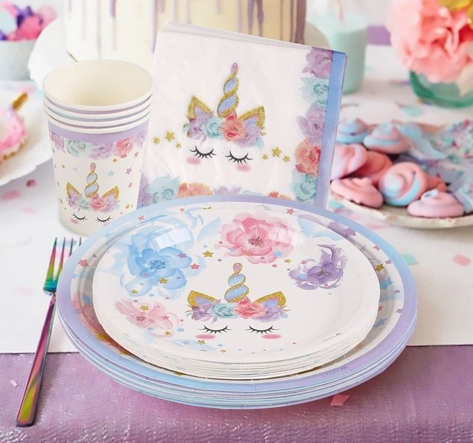

Découvrez l'univers magique d'Unipédia
Ici vous trouverez une encyclopédie complête sur l'univers des licornes, ainsi qu'une boutique remplie de merveilles.
Large sélection de produits licorne
Nous proposons une large sélection de produits liés aux licornes, tels que des peluches et des goudies. Vous trouverez chez nous tout ce dont vous avez besoin pour satisfaire votre passion pour les licornes.
Une expérience unique
Chez Unipédia, nous créons une expérience unique pour nos clients. Notre site propose un onglet similaire à Wikipédia, mais dédié exclusivement aux licornes. Vous pourrez ainsi en apprendre davantage sur ces créatures légendaires.
Qualité et satisfaction garanties
Nous nous engageons à fournir des produits de haute qualité pour satisfaire nos clients. Chez Unipédia, votre satisfaction est notre priorité absolue.
Encyclopédie des Licornes
L'Encyclopédie des Licornes est une ressource complète sur tout ce que vous devez savoir sur ces créatures légendaires. Avec des des illustrations magnifiques et des informations fascinantes, cette encyclopédie est un must-have pour les passionnés de licornes. Découvrez l'histoire des licornes, leurs caractéristiques physiques, leurs pouvoirs magiques et bien plus encore.
Découvrez nos produits
Peluches
La peluche Licorne Arc-en-ciel est le compagnon idéal pour tous les amoureux des licornes. Avec son pelage doux et coloré, cette adorable peluche mesure 30 cm de hauteur et est parfaite pour les câlins. Elle est fabriquée avec des matériaux de haute qualité, ce qui la rend durable et résistante. Que ce soit pour un cadeau d'anniversaire ou pour décorer votre chambre, la peluche Licorne Arc-en-ciel est un choix parfait.
Vaisselles
La vaisselle Licorne Enchantée est idéale pour les passionnés de licornes. Chaque pièce, qu'il s'agisse d'assiettes, de bols ou de tasses, arbore des motifs colorés et féeriques. Fabriquée en porcelaine de haute qualité, cette vaisselle est élégante, résistante et durable. Compatible avec le micro-ondes et le lave-vaisselle, elle est pratique pour une utilisation quotidienne. Parfaite pour des dîners festifs ou pour ajouter une touche de magie à vos repas, la vaisselle Licorne Enchantée transforme chaque occasion en un moment enchanteur.
Thés

Découvrez notre collection de thés et infusions, conçue pour les amateurs de magie et de douceur. Chaque mélange est délicatement élaboré pour offrir des saveurs féeriques et colorées, transformant chaque tasse en une expérience unique et envoûtante. Que ce soit pour une pause détente ou pour partager un moment enchanté entre amis, notre gamme de thés et infusions féeriques est le choix parfait. Plongez dans cet univers magique et découvrez toutes nos créations féeriques en cliquant ici.